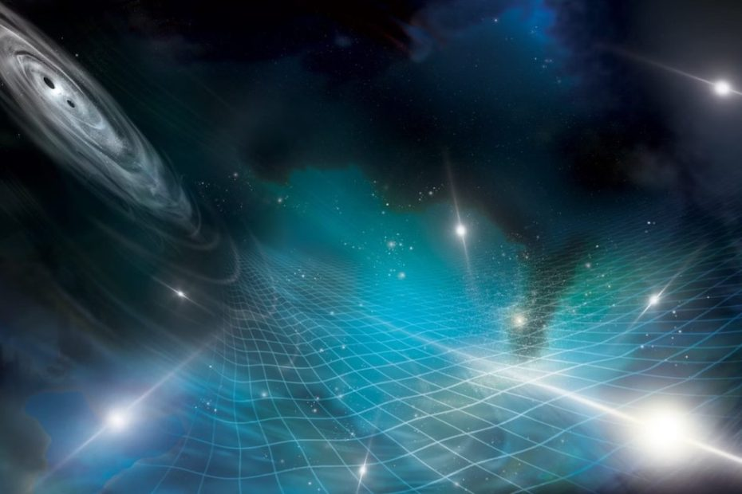

အိုင်းစတိုင်းရဲ့ နှိုင်းရ သီအိုရီ အရ black hole တွင်းနက်တွေ တိုက်မိကြတဲ့ အခါမှာ ပြင်းထန်တဲ့ ဆွဲငင်အား လှိုင်းတွေ ထွက်ပေါ်လို့ လာပါတယ်။ ဒီ ဆွဲငင်အား လှိုင်းတွေ ရှိကြောင်းကိုလဲ LIGO ဆွဲအားလှိုင်း ဖမ်းစက်နဲ့ ဖမ်းယူပြီး သက်သေ ပြနှိုင်ခဲ့ကြပြီး ဖြစ်ပါတယ်။
ယခုအခါ သိပ္ပံ ပညာရှင်တွေဟာ စကြာဝဠာရဲ့ နောက်ခံ ဆွဲအားလှိုင်းကြီးကိုလဲ ရှာဖွေ တွေ့ရှိ ခဲ့ကြပါပြီ။ ဒီ နောက်ခံ ဆွဲအားလှိုင်းကြီးရဲ့ လှိုင်းတွေဟာ တစ်ခုနဲ့ တစ်ခု ဝေးကွာလွန်းတာမို့ သာမန် LIGO စနစ်နဲ့ ဖမ်းယူနိုင်စွမ်း မရှိပါဘူး။ ဒါ့ကြောင့် ဒီ လှိုင်းကို အခြား နည်းစနစ် တစ်မျိုးကို အသုံးပြုပြီး ဖမ်းယူခဲ့တာ ဖြစ်ပါတယ်။
ဆွဲငင်အား လှိုင်း ဆိုတာသည် ဒြပ်ထုကြီးမားတဲ့၊ တနည်းအားဖြင့် ဆွဲငင်အား ကြီးမားတဲ့ အရာဝတ္ထုတွေ အာကာသ ဟင်းလင်းပြင် ထဲမှာ ဖြတ်သန်း သွားတဲ့ အခါမျိုး (သို့) အချင်းချင်း တိုက်မိကြတဲ့ အခါမျိုးမှာ ဖြစ်ပေါ်လာတဲ့ space-time (ဟင်းလင်းပြင်နှင့် အချိန်) အတွင်းက တုန်ခါမှုတွေ ဖြစ်ကြပါတယ်။ ဒီလှိုင်းတွေ ဖြတ်သန်းသွားရာ ဟင်းလင်းပြင် ကိုယ်နှိုက်က ပုံပျက် တုန်ခါ သွားကြတာ ဖြစ်ပါတယ်။
အခု ဖမ်းယူရရှိခဲ့တဲ့ စကြာဝဠာ နောက်ခံ ဆွဲအားလှိုင်းဟာ ဖမ်းယူမိပြီးသမျှ ဆွဲအားလှိုင်းတွေ အနက် အင်အား အကောင်းဆုံး ဖြစ်တယ်လို့ ဆိုပါတယ်။ ဒီ ဆွဲအားလှိုင်းကြီးဟာ ဂလက်ဆီ တွေရဲ့ အလယ်ဗဟိုမှာ ရှိတဲ့ မဟာတွင်းနက်ကြီး (supermassive blackholes) တွေ အချင်းချင်း ပူးပေါင်းသွားတဲ့ အချိန်မှာ ထွက်ပေါ် လာကြတာ ဖြစ်မယ်လို့ ပညာရှင် တွေက ယူဆ ကြပါတယ်။
ဒီ ဆွဲအားလှိုင်းကြီး တွေဟာ အားကောင်းရုံ မကပဲ သူတို့ရဲ့ သက်တမ်းဟာလဲ ဆယ်စုနှစ် များစွာ ကြာမြင့်ပါတယ်။ ဒီ မဟာဆွဲအားလှိုင်း ကြီးဟာ သာမန် တွင်းနက် နဲ့ နျူထရွန်ကြယ် ပေါင်းမိရာက ထွက်လာတဲ့ သာမန် ဆွဲအားလှိုင်းတွေက သယ်ဆောင်တဲ့ စွမ်းအင်ထက် အဆ သန်းပေါင်းများစွာ ပမာဏ ရှိတဲ့ စွမ်းအင်ကို သယ်ဆောင် လာကြတယ်လို့ ပညာရှင်တွေက ခန့်မှန်းကြပါတယ်။
“ဘာနဲ့တူလဲ ဆိုတော့ သံစုံတီးဝိုင်းကြီး တစ်ခုနဲ့ ဆင်ဆင်တူတယ် ပြောရပါမယ်။ ဟိုအားက မဟာတွင်းနက် ကြီးတွေကနေ ဆွဲအားလှိုင်းတွေ ထွက်လာလိုက်၊ ဒီနားက မဟာ တွင်းနက်ကြီး ကနေ ဆွဲအားလှိုင်းတွေ ထွက်လာလိုက်နဲ့” လို့ ဒီ သုတေသနမှာ ပါဝင်တဲ့ သုတေသီ တစ်ဦးဖြစ်သူ Chiara Mingarelli) က ရှင်းပြပါတယ်။ သူဟာ ဒီ သုတေသနမှာ ပါဝင်တဲ့ နက္ခတ်နဲ့ ရူပဗေဒ ပညာရှင် ၁၉၀ ကျော်ထဲက တစ်ဦး ဖြစ်ပါတယ်။
အခု ရှာဖွေ တွေ့ရှိမှုကို ကမ္ဘာ အနှံ့က ရေဒီယို တယ်လီစကုပ် အများအပြားကို အသုံးပြုပြီး ရှာဖွေ ခဲ့တာ ဖြစ်ပါတယ်။ ဒီ ရေဒီယို တယ်လီစကုပ် တွေကနေပြီး pulsar ပေါင်း ၆၈ ခုကို အသေးစိတ် လေ့လာပြီး ဖော်ထုတ် ပေးနိုင်ခဲ့တာ ဖြစ်ပါတယ်။ ဒီ pulsar တွေကို ဆယ်စုနှစ် နှစ်ခုလောက် လေ့လာရရှိတဲ့ အချက်အလက် တွေကို အသေးစိတ် ခွဲခြမ်းစိတ်ဖြာ လေ့လာအပြီး ဒီရလဒ်ကို ကြေငြာနိုင် ခဲ့တာ ဖြစ်ပါတယ်။
Pulsars ဆိုတာက ဝင်ရိုးပေါ် ဗဟိုပြုပြီး အလွန် လျှင်မြန်တဲ့ နှုန်းနဲ့ လှည့်ပတ်နေကြတဲ့ နျူထရွန် ကြယ်တွေ ဖြစ်ကြပါတယ်။ ဒီ နျူထရွန် ကြယ်တွေကနေ အချိန်မှန် ရေဒီယို လှိုင်းတွေ ထုတ်လွှင့် ပေးပါတယ်။
Pulsars တွေက ထွက်တဲ့ ရေဒီယို လှိုင်းတွေဟာ ကမ္ဘာကို ရောက်တဲ့ အချိန်မှာ အလွန် အားပြော့သွားပြီ ဖြစ်ပါတယ်။ ဒါ့ကြောင့် အလွန် ကြီးမားတဲ့ ရေဒီယို တယ်လီစကုပ်တွေကို အသုံးပြုပြီး နာရီပေါင်း များစွာကြာအောင် လေ့လာ ကြရတာ ဖြစ်ပါတယ်။
ယခင် LIGO ကနေ ဖမ်းယူရရှိ ခဲ့တဲ့ ဆွဲအားလှိုင်းတွေဟာ ကြိမ်နှုန်းမြင့် ဆွဲအားလှိုင်းတွေ ဖြစ်ကြပါတယ်။ နောက်ပြီး LIGO ဆွဲအားလှိုင်း တွေရဲ့သက်တမ်းကလဲ အရမ်းကို တိုတောင်းပါတယ်။
အခု ဆွဲအားလှိုင်းတွေကတော့ ကြိမ်နှုန်း နိုမ့်ပြီး လှိုင်းတစ်ခု တစ်ခု ဖြတ်ဖို့ကို နှစ်ပေါင်းများစွာ ကြာပါတယ်။ ဒီတော့ ဒီလို ဆွဲအားလှိုင်းမျိုးကို LIGO နဲ့ ဖမ်းယူဖို့ မဖြစ်နိုင်ပါဘူး။
ဒီတော့ ဒီလှိုင်းတွေကို ဖမ်းယူဖို့ အတွက် နက္ခတ် ပညာရှင် တွေဟာ အခြား နည်းလမ်းကို အသုံးပြုရပါတယ်။ ဒီနေရာမှာ pulsars တွေရဲ့ ကဏ္ဍ ပါဝင်လာတာ ဖြစ်ပါတယ်။
Pulsars တွေဟာ အလွန် လျှင်မြန်စွာ လည်ပတ်နေတာမို့ သူတို့ဆီက ထုတ်လွှင့်တဲ့ ရေဒီယို လှိုင်းတွေဟာလဲ ဒီ လည်ပတ်မှု အတိုင် တုန်ခါနေ ကြပါတယ်။ ဘာနဲ့တာလဲ ဆိုတော့ မီးလုံးလေး တဖြတ်ဖြတ် လင်းနေသလိုမျိုးပါပဲ။ လည်ပတ်နှုန်း မြန်လေလေ ဒီလို တဖြတ်ဖြတ် ခတ်တဲ့နှုန်းလဲ မြန်လေလေပဲ ဖြစ်ပါတယ်။
ဒါကို မျက်လုံးထဲ မြင်အောင် ကြည့်ရရင် လက်နှိပ်ဓါတ်မီး တစ်လုံးကို ကြိုးနဲ့ ချည်ပြီး ခြာခြာလည်အောင် လှည့်တဲ့ အခါ လက်နှိပ်ဓါတ်မီးက မီးဟာ အဝေးက ကြည့်ရင် တဖြတ်ဖြတ် ဖြစ်နေသလိုမျိုးပါပဲ။
Pulsars တွေက ထွက်တဲ့ ရေဒီယို လှိုင်းတွေဟာလဲ လက်နှိပ်ဓါတ်မီးက မီးလို ဦးတည်ရာ တစ်ဖက်ထဲကို ဦးတည်ပြီး ထွက်နေတာမို့ pulsar လည်တဲ့အလျှောက် လိုက်ပါ လှည့်ပတ် ဝှေ့ရမ်းနေမှာ ဖြစ်ပါတယ်။ ဒါကို အဝေးက ကြည့်တော့ ရေဒီယို လှိုင်းတွေ တဖြတ်ဖြတ် ခတ်နေ သလို မြင်ကြရမှာ ဖြစ်ပါတယ်။
ဒီအထဲမှာ လည်ပတ်နှုန်း အလွန်မြန်တဲ့ milisecond pulsar ဆိုတာ ရှိပါတယ်။ ဒီ pulsar တွေဟာ တစ်စက္ကန့်ကို အကြိမ် ရေ ရာနဲ့ချီတဲ့ နှုန်းနဲ့ လည်ပတ်နေကြပါတယ်။ ဒီတော့ သူတို့ဆီက ရေဒီယို လှိုင်းတွေကလဲ တစ်စက္ကန့်ကို အကြိမ်ရေ ရာချီ ခတ်နေမှာ ဖြစ်ပါတယ်။
Supermassive black hole ခေါ် မဟာတွင်းနက် ကြီးတွေဟာ ဂလက်ဆီ တွေရဲ့ အလယ်ဗဟိုမှာ ရှိတဲ့ ကြီးမားတဲ့ တွင်းနက်ကြီးတွေ ဖြစ်ကြပါတယ်။ ဂလက်ဆီ နှစ်စင်း တစ်ခုနဲ့ တစ်ခု ပူးပေါင်း မိတဲ့အခါမျိုးမှာ ဒီ တွင်းနက်ကြီး တွေဟာလဲ တစ်ခုနဲ့ တစ်ခု ပူးပေါင်း သွားကြပါတယ်။ ဒီလို မပူးပေါင်း မိခင်မှာ အချိန် အတော်ကြာအောင် အချင်းချင်း လှည့်ပတ်နေကြမယ်လို့ ယူဆ ရပါတယ်။ ဒီလို အချင်းချင်း လှည့်ပတ်မှုကြောင့် ဒီ တွင်းနက်စုံတွဲ အနားဝန်းကျင်က ဟင်းလင်းပြင်နဲ့ အချိန် (space-time) အတွင်းမှာ ကျုံ့လိုက် ဆန့်လိုက်နဲ့ လှိုင်းတွေ ဖြစ်ပေါ်လာရတာ ဖြစ်ပါတယ်။
ဒီလို ထွက်ပေါ်လာတဲ့ ဆွဲငင်အားလှိုင်း တွေရဲ့ သက်တမ်းကလဲ အရမ်း ကြာတာမို့ စကြာဝဠာရဲ့ နေရာ အနှံ့အပြားက ထွက်လာတဲ့ ဆွဲငင်အား လှိုင်းကြီးတွေဟာ အချင်းချင်း ပေါင်းဆုံမိ ကြမှာ ဖြစ်ပါတယ်။
ဘာနဲ့တူလဲ ဆိုတော့ လူအများကြီး ရှိတဲ့ အခန်းထဲ လူတစ်ယောက်ချင်းစီရဲ့ စကားပြောသံ မကြားရတော့ပဲ နောက်ခံ background noise အနေနဲ့ပဲ ထွက်ပေါ်လာ သလိုမျိုး ဖြစ်ပါတယ်။ ဒါဟာပဲ ပြောရရင် စကြာဝဠာရဲ့ နောက်ခံ အသံလို့တောင် ဆိုနိုင်မှာ ဖြစ်ပါတယ်။
ပညာရှင် တွေဟာ pulsars တွေက ရတဲ့ အချက်တွေ ကနေ ဒီ နောက်ခံ လှိုင်းကို ပြန်လည် ဖော်ထုတ်ကြတာ ဖြစ်ပါတယ်။
နက္ခတ်ပညာရှင် တွေရဲ့ အဆိုအရ ယခု တွေ့ရှိချက်ဟာ အစစ်အမှန် ဖြစ်ဖို့ ၉၉% သေချာတယ်လို့ ဆိုပါတယ်။ (99% confidence level) ဒါပေမယ့် ဒါကို အတည်ပြု ပေးဖို့ နောက်ထပ် အခြား သုတေသနတွေ ထပ်လိုအုံးမှာ ဖြစ်ပါတယ်။ (သိပ္ပံ သုတေသနရဲ့ သဘောအရ သုတေသန ရလဒ် တစ်ခုတည်းနဲ့ သီအိုရီ တစ်ခု၊ တွေ့ရှိချက် တစ်ခုကို အတည်မပြု ပေးနိုင်ပါဘူး။ အတည်ပြု ဖို့အတွက် နောက်ထပ် သုတေသနတွေ ထပ်လုပ်ဖို့ လိုပါတယ်။)
နောက်တဆင့် အနေနဲ့ ကမ္ဘာတစ်ဝန်းက ရေဒီယို တယ်လီစကုပ်ပေါင်း ၁၃ ခုကနေပြီး pulsars ပေါင်း ၁၀၀ ကျော်ဆီက ထုတ်လွှင့်တဲ့ ရေဒီယို လှိုင်းတွေကို ဖမ်းယူပြီး ဆွဲငင်အားလှိုင်းတွေ ရှာဖွေဖို့ပဲ ဖြစ်ပါတယ်။ ဒီနည်းအားဖြင့် ရရှိလာတဲ့ ရလဒ်ကတော့ အလွန် ခိုင်မာတဲ့ ရလဒ် တစ်ခု ဖြစ်လာမယ်လို့ ပညာရှင်တွေက ယုံကြည် ကြပါတယ်။
Ref: After Decades of Observations, Astronomers have Finally Sensed the Pervasive Background Hum of Merging Supermassive Black Holes | Universe Today
စကြာဝဠာရဲ့ နောက်ခံ ဆွဲအားလှိုင်းများ ရှာဖွေတွေ့ရှိ

June 30, 2023
Other Posts
- ချင်ပန်ဇီ မျောက်တွေရဲ့ ဘာသာစကား ရှာဖွေတွေ့ရှိ
- စကြာဝဠာ အတွင်းက ကိုယ်ပျောက် တံတိုင်းများ
- လွန်ခဲ့တဲ့ နှစ်သန်း ၃၀၀ တုန်းက ကမ္ဘာ့မြေပုံ
- အပင်များ၏ အော်ဟစ်ညီးတွားသံ သိပ္ပံ ပညာရှင်များ ရှာဖွေတွေ့ရှိ
- အဒြကြယ်ကြီး ပေါက်ကွဲလုပြီလား
- မိုးပျံကား Taxi တွေလာပြီနော်
- စကြာဝဠာအတွင်း အစောဆုံး အော်ဂဲနစ် ဒြပ်ပေါင်း ဂျိမ်းစ်ဝက်ဘ် ရှာဖွေတွေ့ရှိ
- စတီဗင် ဟော့ကင်းရဲ့ Black Hole သီအိုရီ နှစ် ၅၀ အကြာမှာ သက်သေပြနိုင်ပြီ
- အင်္ဂါဂြိုဟ် ပေါ်မှာ အော်ဂဲနစ် ဒြပ်ပေါင်း အထောက်အထားသစ် ရှာတွေ့
- အာကာသ လေပြင်းက ကြယ်သစ်မွေးဖွားမှုကို ရပ်တန့်စေနိုင်